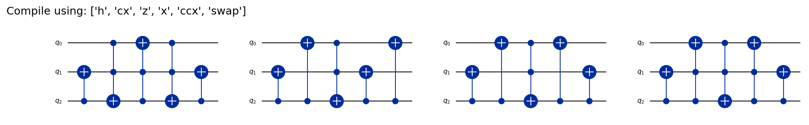
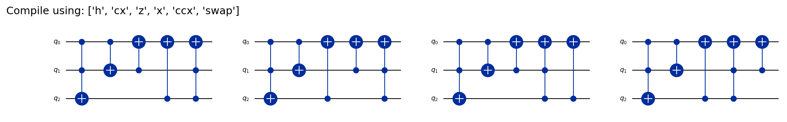
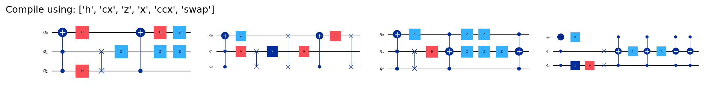

from genQC.imports import *
import genQC.utils.misc_utils as util
from genQC.pipeline.diffusion_pipeline import DiffusionPipeline
from genQC.platform.tokenizer.circuits_tokenizer import CircuitTokenizer
from genQC.platform.simulation import Simulator, CircuitBackendType
from genQC.inference.sampling import decode_tensors_to_backend, generate_compilation_tensors
from genQC.inference.evaluation_helper import get_unitaries
from genQC.inference.eval_metrics import UnitaryInfidelityNorm
from qiskit import QuantumCircuit
import qiskit.quantum_info as qiCompile unitaries
Unitary compilation
Quantum circuits
Pretrained model
A short tutorial showing how to use the unitary compilation model.
device = util.infer_torch_device() # use cuda if we can
util.MemoryCleaner.purge_mem() # clean existing memory alloc[INFO]: Cuda device has a capability of 8.6 (>= 8), allowing tf32 matmul.# We set a seed to pytorch, numpy and python.
# Note: This will also set deterministic algorithms, possibly at the cost of reduced performance!
util.set_seed(0)Setup and load
Load the pre-trained model directly from Hugging Face: Floki00/qc_unitary_3qubit.
pipeline = DiffusionPipeline.from_pretrained("Floki00/qc_unitary_3qubit", device)Set 20 sample steps and use rescaled guidance-formula.
pipeline.guidance_sample_mode = "rescaled"
pipeline.scheduler.set_timesteps(20)
g = 10The model was trained with a gate pool of:
pipeline.gate_pool['h', 'cx', 'z', 'x', 'ccx', 'swap']vocabulary = {g:i+1 for i, g in enumerate(pipeline.gate_pool)}
tokenizer = CircuitTokenizer(vocabulary)
simulator = Simulator(CircuitBackendType.QISKIT)Compile a unitary
Compile a given unitary \(U\). Note, there has to be a solution with the pipeline.gate_pool in order to find the exact solution.
def compile_and_plot(U, prompt):
U_r, U_i = torch.Tensor(np.real(U)), torch.Tensor(np.imag(U))
U_tensor = torch.stack([U_r, U_i], dim=0)
out_tensor = generate_compilation_tensors(pipeline,
prompt=prompt,
U=U_tensor,
samples=samples,
system_size=num_of_qubits,
num_of_qubits=num_of_qubits,
max_gates=max_gates,
g=g,
no_bar=False,
tensor_prod_pad=False,
enable_params=False)
out_tensor = out_tensor.unique(dim=0)
qc_list, error_cnt = decode_tensors_to_backend(simulator, tokenizer, out_tensor)
approx_Us = get_unitaries(simulator, qc_list)
approx_Us = torch.from_numpy(np.stack(approx_Us)).to(torch.complex128)
target_Us = torch.complex(U_r, U_i).unsqueeze(0).to(torch.complex128)
U_norms = UnitaryInfidelityNorm.distance(target_Us, approx_Us)
corr = ( U_norms.abs() < 1.0e-3 )
corr_qc = [qc for qc, c in zip(qc_list, corr) if c]
corr_qc = sorted(corr_qc, key=lambda x: len(x.data)) # sort to get the shortest solutions
fig, axs = plt.subplots(1,4, figsize=(12, 4), constrained_layout=True, dpi=150)
axs[0].set_title(f"{prompt}")
for qc,ax in zip(corr_qc, axs.flatten()):
qc.draw("mpl", plot_barriers=False, ax=ax)
plt.show()samples = 512
num_of_qubits = 3
max_gates = 12prompt = "Compile using: ['h', 'cx', 'z', 'x', 'ccx', 'swap']" # model was trained with phrases like this, allow full gate set
prompt"Compile using: ['h', 'cx', 'z', 'x', 'ccx', 'swap']"Exercise 1
Inspired from (quantumcomputing.stackexchange.com/questions/13821/generate-a-3-qubit-swap-unitary-in-terms-of-elementary-gates/13826). Note, this unitary WAS in the training set.
U = np.matrix([[1,0,0,0,0,0,0,0],
[0,1,0,0,0,0,0,0],
[0,0,1,0,0,0,0,0],
[0,0,0,0,1,0,0,0],
[0,0,0,1,0,0,0,0],
[0,0,0,0,0,1,0,0],
[0,0,0,0,0,0,1,0],
[0,0,0,0,0,0,0,1]], dtype=np.complex128)
assert np.allclose(U.H@U, np.identity(2**num_of_qubits)) and np.allclose(U@U.H, np.identity(2**num_of_qubits)) #check if unitaryPlot correct (exact) compiled circuits:
compile_and_plot(U, prompt)[INFO]: (generate_comp_tensors) Generated 512 tensors
Exercise 2
Inspired from (quantumcomputing.stackexchange.com/questions/12439/procedures-and-intuition-for-designing-simple-quantum-circuits/12440). Note, this unitary WAS in the training set.
U = np.matrix([[1,0,0,0,0,0,0,0],
[0,0,0,0,0,0,0,1],
[0,1,0,0,0,0,0,0],
[0,0,1,0,0,0,0,0],
[0,0,0,1,0,0,0,0],
[0,0,0,0,1,0,0,0],
[0,0,0,0,0,1,0,0],
[0,0,0,0,0,0,1,0]], dtype=np.complex128)
assert np.allclose(U.H@U, np.identity(2**num_of_qubits)) and np.allclose(U@U.H, np.identity(2**num_of_qubits)) #check if unitaryPlot correct (exact) compiled circuits:
compile_and_plot(U, prompt)[INFO]: (generate_comp_tensors) Generated 512 tensors
Exercise 3
A randomly generated unitary (from a random circuit). This unitary WAS NOT in the training set, it is new to the model!
U = np.matrix([[ 0.70710678, 0. , 0. , 0. , 0.70710678, 0. , 0. , 0. ],
[ 0. , -0.70710678, 0. , 0. , 0. , -0.70710678, 0. , 0. ],
[-0.70710678, 0. , 0. , 0. , 0.70710678, 0. , 0. , 0. ],
[ 0. , 0.70710678, 0. , 0. , 0. , -0.70710678, 0. , 0. ],
[ 0. , 0. , 0.70710678, 0. , 0. , 0. , 0. , 0.70710678],
[ 0. , 0. , 0. , 0.70710678, 0. , 0. , 0.70710678, 0. ],
[ 0. , 0. , -0.70710678, 0. , 0. , 0. , 0. , 0.70710678],
[ 0. , 0. , 0. ,-0.70710678, 0. , 0. , 0.70710678, 0. ]], dtype=np.complex128)
assert np.allclose(U.H@U, np.identity(2**num_of_qubits)) and np.allclose(U@U.H, np.identity(2**num_of_qubits)) #check if unitaryPlot correct (exact) compiled circuits:
compile_and_plot(U, prompt)[INFO]: (generate_comp_tensors) Generated 512 tensors
Transpile and discover
Set an initial circuit we want to transpile, optimize or use for discovering sub-arrangements:
qc = QuantumCircuit(3)
qc.h(2)
qc.cx(0,1)
qc.cx(2,1)
qc.h(1)
qc.x(1)
qc.h(1)
qc.x(2)
U = qi.Operator(qc).to_matrix() # the unitary of the circuit
#-----------------------------------------
fig = qc.draw("mpl")
figWe set different gate pool targets to see what the model gives us:
cs_1 = f"Compile using: {[x for x in pipeline.gate_pool]}", "all"
cs_2 = "Compile using: ['h', 'cx', 'z', 'ccx']" , "no x, no swap"
cs_3 = "Compile using: ['h', 'cx', 'x', 'ccx']" , "no z, no swap"
cs_4 = "Compile using: ['h', 'x', 'ccx']" , "no cx, no z, no swap"
cs_5 = "Compile using: ['h', 'z', 'x', 'ccx']" , "no cx, no swap"
cs = [cs_1, cs_2, cs_3, cs_4, cs_5]
cs[("Compile using: ['h', 'cx', 'z', 'x', 'ccx', 'swap']", 'all'),
("Compile using: ['h', 'cx', 'z', 'ccx']", 'no x, no swap'),
("Compile using: ['h', 'cx', 'x', 'ccx']", 'no z, no swap'),
("Compile using: ['h', 'x', 'ccx']", 'no cx, no z, no swap'),
("Compile using: ['h', 'z', 'x', 'ccx']", 'no cx, no swap')]samples = 512
num_of_qubits = 3
max_gates = 12Compile with the different gate-sets and plot correct (exact) compiled circuits. Note, some of the circuits might look the same but the gate time-sequences are distinct. Qiskit reorders “parallel” gates to make smaller plots.
for c, note in cs: compile_and_plot(U, c)[INFO]: (generate_comp_tensors) Generated 512 tensors[INFO]: (generate_comp_tensors) Generated 512 tensors[INFO]: (generate_comp_tensors) Generated 512 tensors[INFO]: (generate_comp_tensors) Generated 512 tensors[INFO]: (generate_comp_tensors) Generated 512 tensorsimport genQC
print("genQC Version", genQC.__version__)genQC Version 0.2.0